UDN
Search public documentation:
MobileKismetReference
日本語訳
中国翻译
한국어
Interested in the Unreal Engine?
Visit the Unreal Technology site.
Looking for jobs and company info?
Check out the Epic games site.
Questions about support via UDN?
Contact the UDN Staff
中国翻译
한국어
Interested in the Unreal Engine?
Visit the Unreal Technology site.
Looking for jobs and company info?
Check out the Epic games site.
Questions about support via UDN?
Contact the UDN Staff
Mobile Kismet Reference
Overview
Input
Actions
These Kismet actions can be used to set up input zones from within Kismet.Add Input Zone
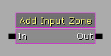 The Add Input Zone action adds a single input zone to the screen. Note: that theZone Name is important if you want to hook up any of the kismet input events which associate with a specific input zone (MobileButton, MobileInput, MobileLook). If you are just going to use the Input Key to send key bindings to the input system, the name isn't important.
Properties
- Zone Name - Specifies the name to give the new input zone.
- New Zone - Creates a new input zone using the standard object-creation property dialog allowing you to set up a template for the newly created zone when the kismet action is run. See the Mobile Input System page for more information on setting up input zones.
Clear Input Zones
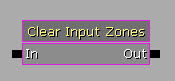 The Clear Input Zones action removes all of the zones from the screen that were loaded from the .ini file or created through Kismet. At this point, you must start over from scratch, using the above action to add new input zones.Remove Input Zone
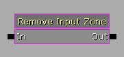 The Remove Input Zone action removes a specific input zone by name from the screen. Properties- Zone Name - Specifies the name of the input zone to be removed.
Events
These events can be used to convert input from input zones into gameplay actions directly inside of Kismet.Mobile Button Access
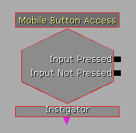 The Mobile Button Access event allows Kismet to hook up to aMobileInputZone with the type of ZoneType_Button. In the event are options for controlling when the outputs are followed (touch up, touch down, or constantly)
Properties
- SeqEvent_MobileButton
- Send Press Only On Touch Down - If TRUE, the Input Pressed output will only activate when the button is first pressed. The rest of the time the button is pressed the Input Not Pressed output will fire each frame. Otherwise, the Input Pressed output will be activated every frame while the button is pressed.
- Send Press Only On Touch Up - If TRUE, the Input Pressed output will only activate when the button is released. The rest of the time the button is pressed the Input Not Pressed output will fire each frame. Otherwise, the Input Pressed output will be activated every frame while the button is pressed. Note: Make sure the Re Trigger Delay property is set to
0.0if this is enabled or the output may not fire.
- SeqEvent_MobileZoneBase
- Target Zone Name - Holds the name of the input zone to be associated with this event. Note: This must match the name of an existing input zone or the event will not function.
- Input Pressed - Fires each frame when the button is being pressed.
- Input Not Pressed - Fires when the button is released.
- Instigator - Outputs the
PlayerControllerresponsible for the touch input.
Mobile Input Access
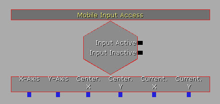 The Mobile Input Access event allows Kismet to hook up to aMobileInputZone with ZoneType_Joystick. It exposes several variables (Axis values and touch position) that can be used to manage the input.
Properties
- SeqEvent_MobileZoneBase
- Target Zone Name - Holds the name of the input zone to be associated with this event. Note: This must match the name of an existing input zone or the event will not function.
- Input Active - Fires each frame when the joystick is being used.
- Input Not Active - Fires when the joystick is released.
- X-Axis - Outputs the current vertical axis value. This is a value in the range [-1.0, 1.0] where -1.0 means the joystick is at the maximum extent downward, 1.0 means the joystick is at the maximum extent upward, and 0.0 means the joystick is centered vertically.
- Y-Axis - Outputs the current horizontal axis value. This is a value in the range [-1.0, 1.0] where -1.0 means the joystick is at the maximum extent left, 1.0 means the joystick is at the maximum extent right, and 0.0 means the joystick is centered horizontally.
- Center.X - Outputs the vertical center of the joystick in screen coordinates (pixels).
- Center.Y - Outputs the horizontal center of the joystick in screen coordinates (pixels).
- Current.X - Outputs the current vertical position of the joystick in screen coordinates (pixels).
- Current.Y - Outputs the current horizontal position of the joystick in screen coordinates (pixels).
Mobile Look
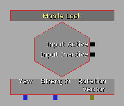 The Mobile Look event connects to aMobileInputZone with ZoneType_Joystick but converts it in to a yaw value that can be applied to a pawn. This allows you to quickly create a pawn that will turn to follow the position of the stick for a top/down style game.
Properties
- SeqEvent_MobileZoneBase
- Target Zone Name - Holds the name of the input zone to be assioicated with this event. Note: This must match the name of an existing input zone or the event will not function.
- Input Active - Fires each frame when the joystick is being used.
- Input Not Active - Fires when the joystick is released.
- Yaw - Outputs the direction the joystick is being moved in Unreal Rotator units [0, 65536] where 0 is straight up vertically and the rotation increases clockwise.
- Strength - Outputs the distance of the current location of the touch from the center of the joystick in pixels.
- Rotation Vector - Outputs a vector where the X and Y components represent the current vertical and horizontal axes of the joystick. The values are in the range [-1.0, 1.0].
Mobile Motion Access
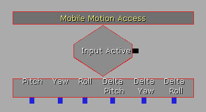 The Mobile motion Access event gives you access to the Attitude and RotationRate information output by the accelerometer of the device the game is running on, if available. 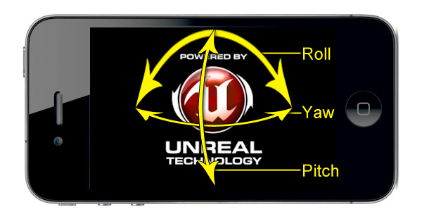 Output Links- Input Active - Fires each frame while the game is running on a device with accelerometer functionality.
- Pitch - Outputs the current pitch of the device in Unreal Rotator units. See image above.
- Yaw - Outputs the current yaw of the device in Unreal Rotator units, if available. See image above.
- Roll - Outputs the current roll of the device in Unreal Rotator units. See image above.
- Delta Pitch - Outputs the rate of change of the pitch of the device in Unreal Rotator units per second.
- Delta Yaw - Outputs the rate of change of the yaw of the device in Unreal Rotator units per second.
- Delta Roll - Outputs the rate of change of the roll of the device in Unreal Rotator units per second.
Mobile Object Picker
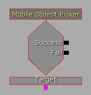 The Mobile Object Picker event allows you to tell if a touch occurred over a specific object in the world. The way this event works is it takes the X/Y of the touch and traces out in the world. If the trace hits the object specified by the Target variable link, it will activate it's Success output link. Otherwise the Fail output link is activated. You can expose theFinalTouchLocation, FinalTouchNormal, and FinalTouchObject properties to manage what was touched.
Properties
- Mobile
- Trace Distance - Specifies the maximum distance the object can be from the camera to register as being picked.
- Touch Index - Specifies the index into the touch array of the
MobilePlayerInputthat this event should manage.
- SeqEvent_MobileObjectPicker
- Targets - Holds the list of objects to check for touches.
- Success - Fires when a touch occurs over the Target object.
- Fail - Fires when a touch occurs not over the Target object.
- Target - Specifies the object to test for touches.
Mobile Raw Input Access
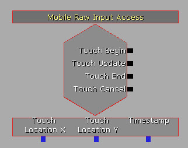 The Mobile Raw Input Access event is used to manage raw input events. It's similar to theOnInputTouch() delegate available in the MobilePlayerInput class that can be used in UnrealScript.
Properties
- Mobile
- Touch Index - Specifies the index into the touch array of the
MobilePlayerInputthat this event should manage.
- Touch Index - Specifies the index into the touch array of the
- Touch Begin - Fires when a touch first occurs, i.e. when a finger touches the screen.
- Touch Update - Fires each frame while a touch is occurring, i.e. while a finger is touching the screen.
- Touch End - Fires when a touch ends, i.e. when a finger stops touching the screen.
- Touch Cancel - Fires when a touch is canceled by an outside influence, i.e. when a system message appears.
- Touch Location X - Outputs the vertical location of the touch on the screen in pixels.
- Touch Location Y - Outputs the horizontal location of the touch on the screen in pixels.
- Timestamp - Outputs the time when the touch event occurred.
Mobile Simple Swipes
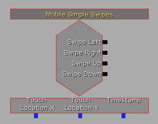 The Mobile Simple Swipes event provides basic swipe detection and activates impulses depending on the direction of the swipe. Properties- Swipe
- Tolerance - How many pixels should the touch be able to wander in the off-axis in order to still be considered a swipe.
- Min Distance - How many pixels must the touch last for in order to be considered a swipe.
- Mobile
- Touch Index - Specifies the index into the touch array of the
MobilePlayerInputthat this event should manage.
- Touch Index - Specifies the index into the touch array of the
- Swipe Left - Fires if the touch was a swipe in the left direction.
- Swipe Right - Fires if the touch was a swipe in the right direction.
- Swipe Up - Fires if the touch was a swipe in the up direction.
- Swipe Down - Fires if the touch was a swipe in the down direction.
- Touch Location X - Outputs the vertical location of the touch on the screen in pixels.
- Touch Location Y - Outputs the horizontal location of the touch on the screen in pixels.
- Timestamp - Outputs the time when the touch event occurred.
HUD
Draw Image
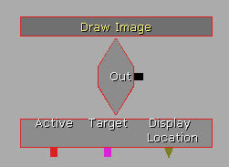 The Draw Image event displays a texture, or a portion of a texture, overlayed on the screen. Properties- HUD
- Display Color - Specifies the color to modulate the image by.
- Display Location - Specifies the relative location to draw the image on the screen. This is a vector where X and Y are the horizontal and vertical location in the range of [0.0, 1.0].
- Display Texture - The texture to draw the image from.
- [X/Y]L - The horizontal and vertical size of the image to be drawn.
- [U/V] - The horizontal and vertical location in pixels of the top-left corner of the portion of the texture to be drawn.
- [U/V]L - The horizontal and vertical width in pixels of the portion of the texture to be drawn.
- Is Active - If TRUE, the image will be drawn.
- Authored Global Scale - Specifies the scale factor of the display the content is being authored for. A value of 2.0 is useful for high resolution screens (i.e. iPhone 4), while 1.0 is useful for standard resolution screens such as iPad and older iPhones/iPod Touches.
- Out - This output does not fire.
- Active - Sets whether the image will be drawn via the
Is Activeproperty. - Target -
- Display Location - Sets/Outputs the location of the image being drawn to the screen.
Draw Text
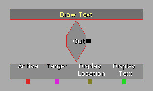 The Draw Text event displays a string of text overlayed on the screen. Properties- HUD
- Display Font -
- Display Color - Specifies the color to modulate the image by.
- Display Location - Specifies the relative location to draw the image on the screen. This is a vector where X and Y are the horizontal and vertical location in the range of [0.0, 1.0].
- Display Text - The string of text to draw to the screen.
- Text Draw Method - The method to use when drawing the text to the screen.
- DRAW_CenterText - Centers the text horizontally on the
Display Location. - DRAW_WrapText - Draws the text wrapped starting from the
Display Location.
- DRAW_CenterText - Centers the text horizontally on the
- Is Active - If TRUE, the image will be drawn.
- Authored Global Scale - Specifies the scale factor of the display the content is being authored for. A value of 2.0 is useful for high resolution screens (i.e. iPhone 4), while 1.0 is useful for standard resolution screens such as iPad and older iPhones/iPod Touches.
- Out - This output does not fire.
- Active - Sets whether the text will be drawn via the
Is Activeproperty. - Target -
- Display Location - Sets the location of the text being drawn to the screen.
- Display Text - Sets the string of text to be drawn to the screen.
Saving Data
Save/Load Values
Currently this action only works in iOS 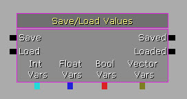 The Save/Load Values action provides the ability to save or load Int, Float, Bool, or Vector values stored in Kismet variables. This is essentially a wrapper around the console commands for saving and loading data. See the Unreal Engine 3: Mobile Overview page for more information on saving and loading data. Note: It's recommended that you use the same action to save and load variables, especially if you have a lot of variables, so that you can easily save and load the exact same variables. Input Links- Save - Causes the linked variables to be saved to disk.
- Load - Causes the linked variables to be loaded from disk.
- Saved - Fires when the linked variables have been saved.
- Loaded - Fires when the linked variables have been loaded.
Var Name property) to be able to be saved. You can also use a Named Variable object that points to an Int, Float, Bool or Vector variable.
- Int Vars -
- Float Vars -
- Bool Vars -
- Vector Vars -